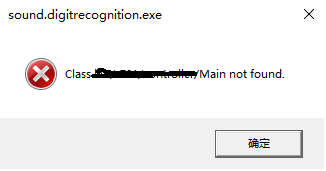

用Idea写了一个JavaFX项目，创建artifacts，build artifacts，运行build出来的exe可执行文件时总是遇到 class not found的错误，如下图

一开始根据提示以为是class路径没设置好，但怎么改都是一样的错误，网上也搜不到跟我遇到同样问题的人。
后来新建了个JavaFX项目，不用Maven，发现可以正常部署，可以找到Main类。
最后两个项目之间一点点地修改，一点点地比对，发现问题出在静态属性的定义并初始化上，比如下面代码中有四个静态属性并且都在类加载时进行初始化
控制变量法式地测试发现，单纯定义了静态属性的话，没有问题可以找到Main类，但如果在定义语句后面初始化赋值，就会导致上面图中的class not found的错误
public class Main extends Application {
private Logger logger = LoggerFactory.getLogger(Main.class);
private Stage primaryStage;
private BorderPane rootLayout;
private SoundService soundService = new SoundService();
private static Image fileIcon = new Image(Main.class.getResource("/images/iconfinder_icon-55-document-text_315178.png").toString(), 16, 16, true, true);
private static Image folderIcon = new Image(Main.class.getResource("/images/iconfinder_icon-94-folder_314778.png").toString(), 16, 16, true, true);
private static Image musicIcon = new Image(Main.class.getResource("/images/iconfinder_icon-63-document-music_315187.png").toString(), 16, 16, true, true);
private static Image audioMediaIcon = new Image(Main.class.getResource("/images/iconfinder_multimedia-44_2849792.png").toString(), 16, 16, true, true);
/*
其余无关代码
*/
}